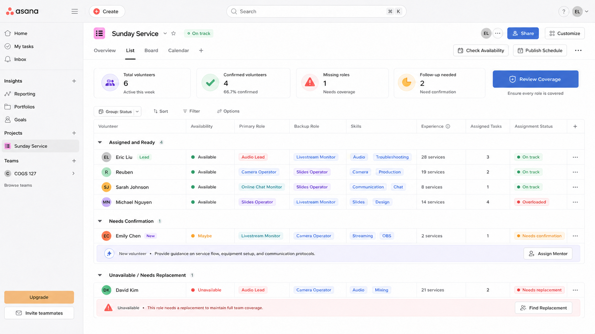
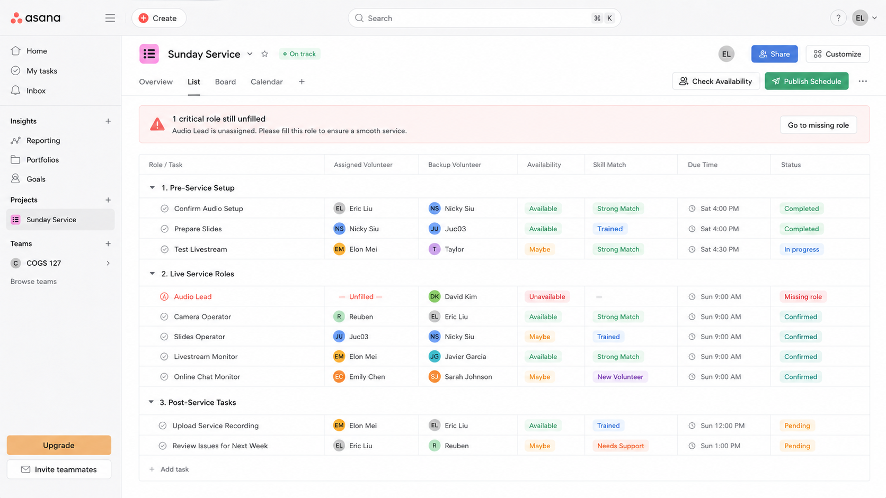
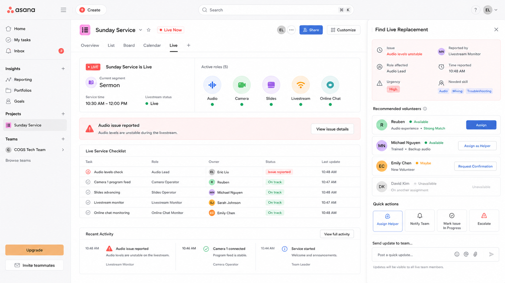
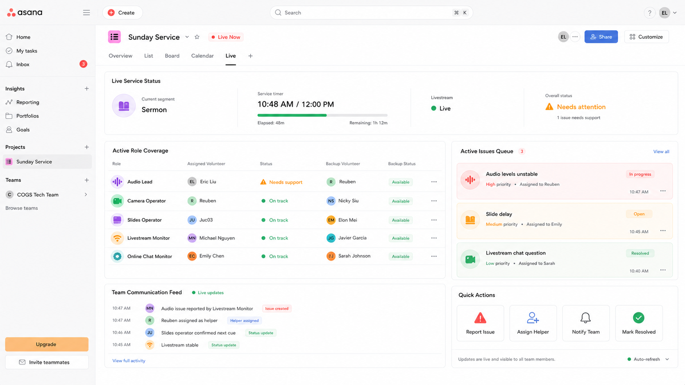

Redesigning Asana for the people who run
church livestreams.
Who we designed for, and why Asana
Our users are the volunteers who run the livestream at small churches. They set up the cameras, run the audio, control the slides, and keep the stream going, usually without getting paid and without a set schedule from week to week.
We did two interviews early on, and they pointed us somewhere we didn't really expect. The main problem isn't audio or video breaking. That stuff happens once in a while, but it's not the real issue. The harder part is coordination. Roles change every week, volunteers don't always show up, and most of the knowledge about how everything works lives in one person's head. So we decided to redesign Asana's "Sunday Service" workspace around that.
Four competing directions
Instead of just polishing one idea, we made four high-fidelity screens. Each one was kind of a bet on a different answer to the question, "what does this team actually need?"




Two users, one call each
We tested with two people who actually run tech at a church: one who leads the tech team across a few Sunday services, and one who runs the livestream. Both sessions were on Zoom, one person at a time, where they looked through the screens and talked through what they thought.
One thing to be clear about
These were walkthroughs of static screens, not hands-on usability tests, so I'm not reporting task times or error rates. We showed each screen and talked through it, and the useful part was their reactions and what they said they'd actually use.
What testing told us
A few reactions were strong enough, and showed up with both people, that they ended up changing the whole direction of the project.
Just seeing a list of volunteers isn't really the problem.
At a small church, the leader already knows who their volunteers are. What they're actually worried about before Sunday is whether everyone has confirmed and whether any role is still empty. So a screen that just lists volunteers doesn't help much on its own.
→ So we dropped the volunteer-first view as our main ideaThe role-based view matched what they actually ask each week.
Setting it up by role, and making the open roles obvious, lined up with the real question: do we have the right people for this service? Both of them did say that breaking everything down into tiny tasks was too much, since volunteers already know what their job is.
→ Role-based planning became our main directionOur two users didn't agree on skill-matching, so we cut it.
One of them thought a skill-match label was useful for putting the right person in a role. The other thought it was just extra clutter. Instead of picking a side, we swapped it out for a short guide (an SOP) for each role, so the role is easy to learn instead of something the app has to keep track of.
→ Replaced skill-match with a short guide for each roleNobody needs to see "who's online" once the service starts.
We'd put a lot into showing who was covering each role during the service. Both users said that part wasn't useful, because by the time service starts the team is all together in the back and already knows who showed up. What the live screen should really do is help them catch and fix things that break.
→ Refocused the live mode on problems, not who's aroundThe livestream itself is a blind spot.
During the service the operator isn't actually watching the YouTube or Facebook stream. The way he finds out it went down is when someone texts him about it. The thing he got most excited about was a feature that notices when the stream cuts out and sends an alert.
→ Added livestream monitoring and alertsThree things that change for the person running Sunday
Each of these comes from something a user told us they do right now, next to the design change it led to.
To see who's missing, the tech lead has to swipe through each service time in Planning Center one by one and keep track of it in his head. Gaps show up late, or sometimes not until it's already a problem.
A readiness dashboard with a tab for each service time. Any role that isn't filled shows up in red as soon as he opens it, and he can check availability in one tap. Coverage is the first thing he sees instead of the last.
During the service the operator is focused on the sound in the room and isn't watching the actual broadcast. If the stream drops, the first he hears about it is a viewer texting him, which is usually minutes of dead air later.
The live dashboard keeps an eye on the stream and sends an alert the moment something breaks, so the team can react right away instead of hearing about it after the fact.
Most of the problems we solve are the same few things over and over again. — TECH LEAD, USER INTERVIEW
Problems get fixed in the moment and then forgotten. Nothing gets written down, so the team keeps running into and re-solving the same issues week after week.
Now issues get logged during the service and can be turned into follow-up tasks. After the service the team can look back at them, notice the pattern, and update the role's guide so it doesn't keep happening.
From four ideas down to one
Testing basically narrowed the four directions down to one clear point of view. The product should help teams answer two questions: do we have the right people confirmed for each service, and can we see and respond fast when something goes wrong? And it shouldn't turn into a heavier task tracker or a big volunteer database.